Reading the screen
Let us draw a single trajectory from Earth to Mars.
What you will learn here
- A mission is built by lining up “sequences”
- Fixing the dates fixes the trajectory
- The score is read off the bar at the bottom left
Three areas
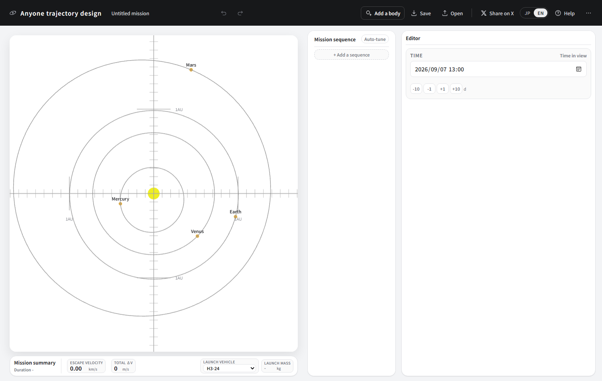
The solar-system view is where you see what is where. Drag to rotate, use the wheel to zoom. With nothing selected, the time shown here is only a preview. Press ← → and the date moves, spinning the planets round. However much you move it in this state, no mission date changes.
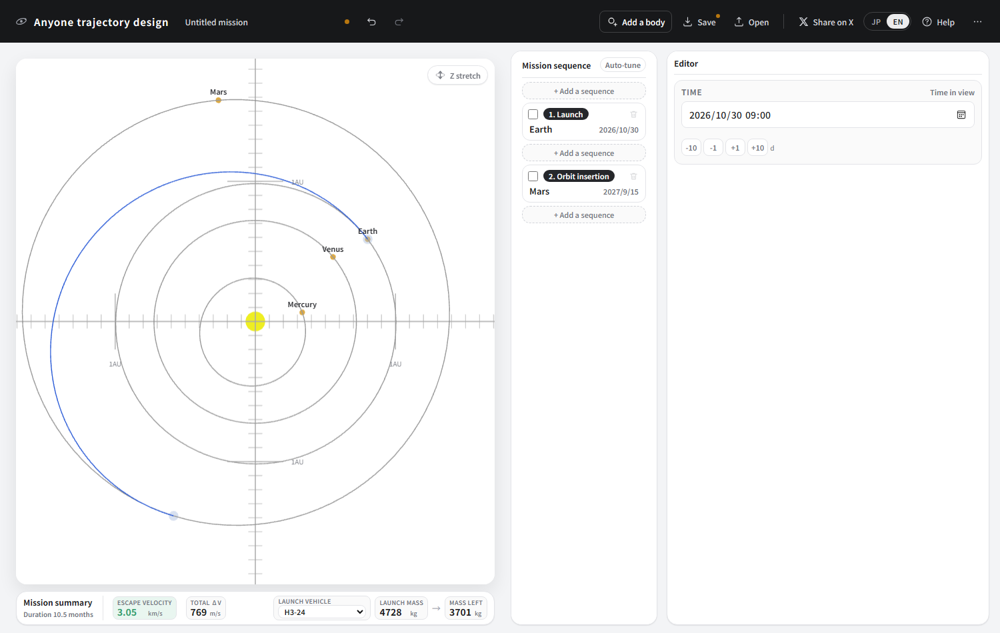
The mission sequence is the list of what the spacecraft is going to do. You line up sequences — “Launch”, “Swingby”, “Orbit insertion” and so on — from the top down.
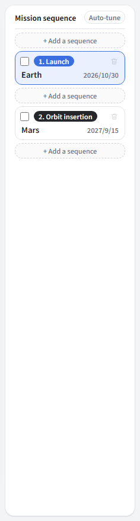
The editor shows the settings and readouts for whichever sequence you picked in the list. Its contents change completely with the kind of sequence selected.
Drawing a leg to Mars
-
Press “+ Add a sequence” twice. The first one is always a Launch. Then click the second card to select it.
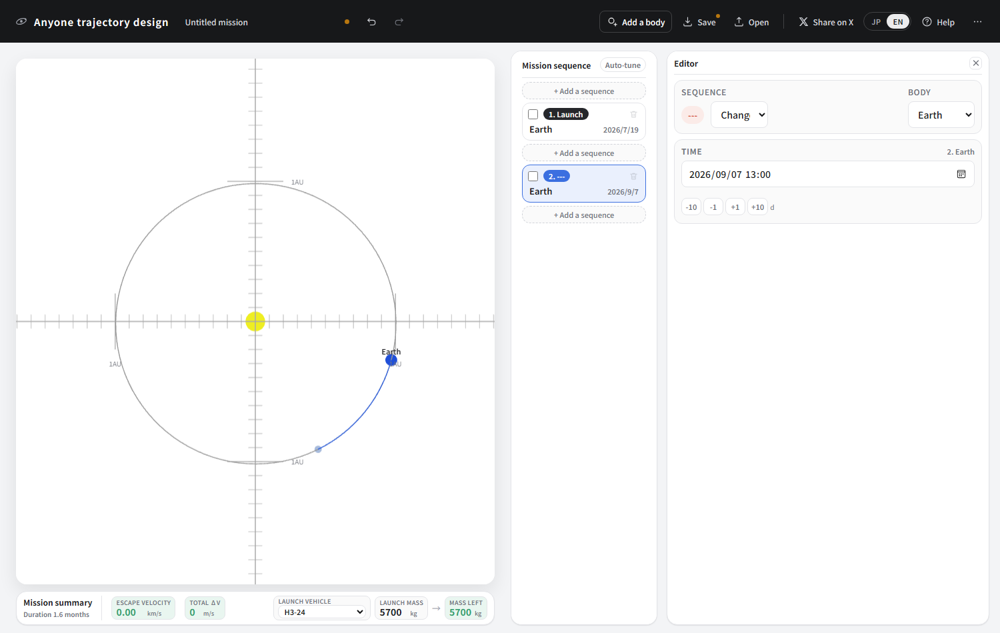
The second one still has type “---”, with Earth filled in as a placeholder body. We change both next. -
In the editor, change Body to “Mars”. Then, under Sequence, pick “Orbit insertion” from the “Change” list.
Which types are on offer depends on the body. For a planet: swingby, orbit insertion, atmospheric entry. For an asteroid: flyby, rendezvous. The gravity is a different size, so what you can do differs too.
-
Now the dates. Selecting a card puts that sequence's date into Time in the editor, so set the launch to 2026/10/30 and the arrival at Mars to 2027/09/15.
You can type into the date box, use the -10 -1 +1 +10 buttons, press ← →, or grab a planet in the solar-system view and drag it. Any of them works.
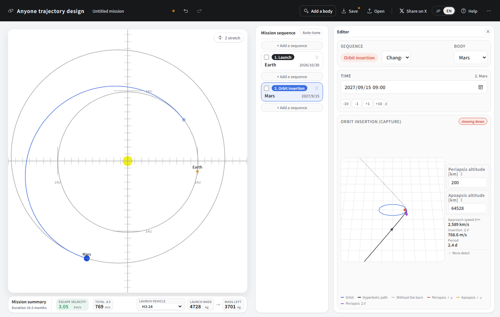
The blue line is the spacecraft's path. The moment the dates are fixed, the trajectory joining them is worked out.
Reading the score
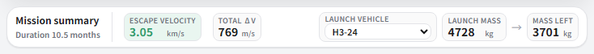
| Readout | What it is | When it is large |
|---|---|---|
| Escape velocity | The speed left over after breaking free of Earth's gravity | You get further, sooner, but less mass goes up |
| Total ΔV | The total speed change the spacecraft makes with its own fuel | It eats fuel, so less mass is left |
| Launch mass → Mass left | What the chosen rocket can launch, and what remains once the fuel is spent | The larger the mass left, the better the design |
They are colour-coded: blue-green is easy, yellow or orange is hard, red is very hard. Hover over one and you can read where the boundaries between those colours sit.
Tightening it with auto-tune
Setting dates by hand only needs to get you in the right neighbourhood. Press Auto-tune in the mission-sequence heading and it nudges the current design toward the largest mass left.
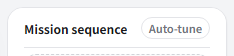
Let us press it on the Mars leg we just drew.

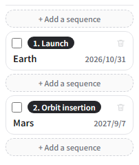
The arrival at Mars moved from 2027/9/15 to 2027/9/7. That alone dropped the launch energy from 9.30 to 9.22 km²/s², so the launchable mass rose from 4728 to 4736 kg, and the insertion burn fell from 769 to 760 m/s, leaving 3701 → 3717 kg. That is a gain of 16 kg — which also says the dates picked by hand were already rather good.
What it moves
Only the things that are design variables right now.
- The launch date — up to 30 days either way
- The flight time of each leg — between 1/1.2 and 1.2 times what it is now
- The speed and direction of a launch or orbit departure, where it is in manual mode
- The periapsis altitude and rotation angle of a swingby, where it is in manual mode
- The size and direction of a deep-space burn
It does not move the altitudes of an orbit. Those say “I want to observe from that altitude”; they are not values to be raised and lowered freely just to save fuel. The order of bodies and sequence types does not change either.
You may get “It could not be improved further”. That means there is nothing better in the neighbourhood of the current design. If you do not like the result, Ctrl+Z takes it back.
Readouts in the editor
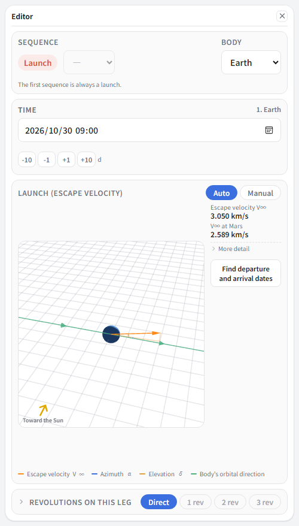
The numbers line up in the narrow column on the right. Only the ones that matter for deciding the design are shown; anything you would use just to check your work is folded away under “More detail”. Click it to open.
“V∞ at Mars” is how fast you arrive at Mars at the end of this leg, as seen from Mars. Whether the trajectory you are about to build is any good usually comes down to that number.
Shortcuts worth knowing
| ↑ ↓ | Select a sequence |
| ← → | Move the time by a day (Shift for ten) |
| A / Delete | Add / delete a sequence |
| Ctrl+Z | Undo |
| ? | The list of keyboard shortcuts |
Saving and sharing
Saving and sharing what you have made are gathered on the right of the top bar.
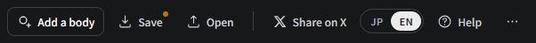
The “⋯” at the far right opens the rest.
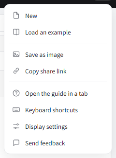
Load an example holds the trajectories built in these tutorials and reference pages. Use it to see the finished article before you start, or to check your answer when you get stuck partway.
Saving to a file
Save (Ctrl+S) drops a single JSON file. Its name comes from the mission name (“To Mars” gives To Mars.json). Open (Ctrl+O) brings it back.
It is readable in a text editor, and you are welcome to edit the dates by hand.
Handing it over as a link
Choose Copy share link from “⋯” and a URL goes to your clipboard. Whoever opens it sees your design exactly as it stands. Any small bodies you added travel with it, so a design built after adding Ryugu makes Ryugu appear on their screen too.
Turning it into a picture
Save as image, from “⋯”. It does not photograph the screen; it lays out just what belongs in the picture and draws it afresh.
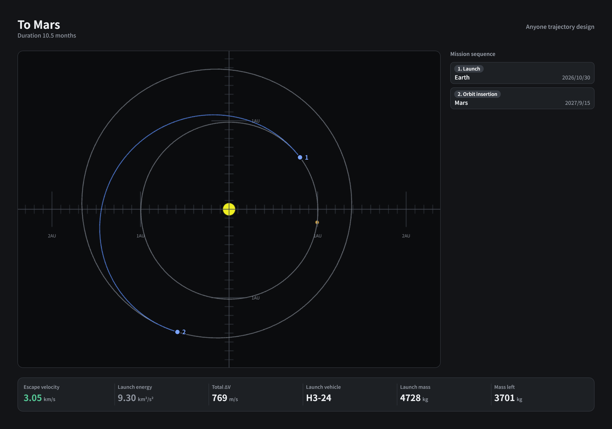
No buttons or dropdowns creep in. The layout does not change with the width or height of your screen, so saving on a phone gives the same shape. The solar-system view is redrawn larger and at a higher resolution than you see on screen.
Posting on X
Share on X opens the post window with the text and the share link already filled in.
On a computer it copies the image to the clipboard before opening, so Ctrl+V in the post box attaches the picture too. Opening X's post window by URL gives no way to hand it an image, hence the two steps. On a phone the system share sheet opens instead, so picking X there brings the text, link and image together.